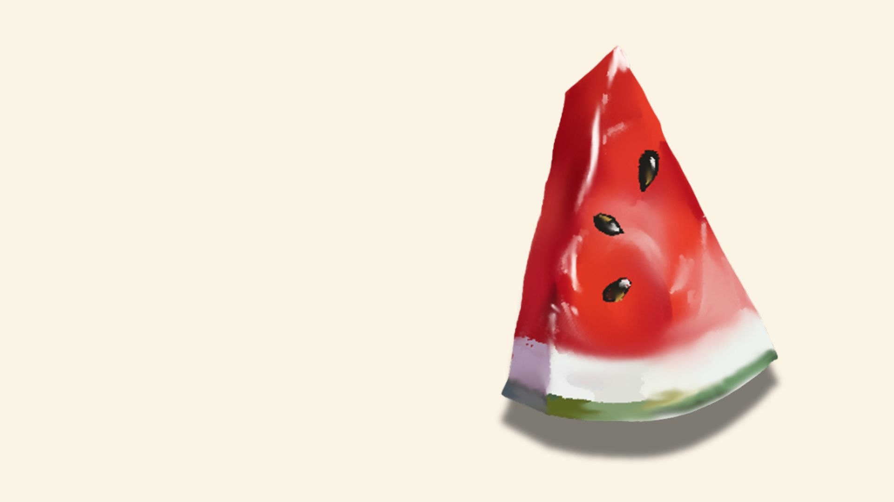

The
watermelon
I created a digital illustration of a watermelon primarily using the brush tool for shading and texture, and the pen toolto trace and define the shape. I focused on adding detailed highlights and shadows to bring the fruit to life, ensuring it looked vibrant and realistic. This project helped me improve my precision with the brush tool and enhance my understanding of digital painting techniques.